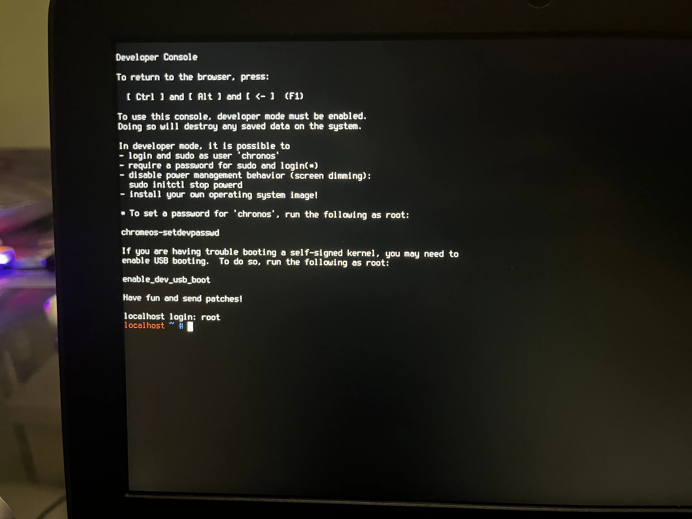
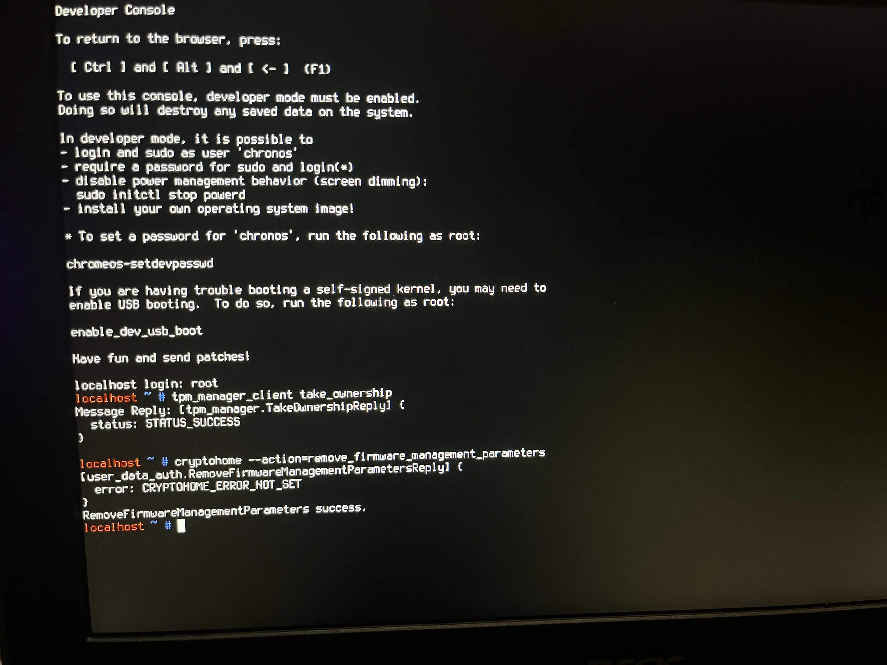

What you'll need
Disabling WP
First, you'll need to unplug everything in the Chromebook, such as the charger, any USB devices, etc.
Take your screwdriver and open the back panel of your Chromebook.
Find the battery cable and unplug it from the Chromebook, this should disable the Write Protection on the majority of supported Chromebooks w/ SH1MMER.
An example of the battery connector location is shown below:


The Chromebook shown here is the Acer Chromebook 311 (C733).
Plug in the charger, and turn on the Chromebook. Yes, this will work as the Chromebook will run from the power of the charger.
On some Chromebooks such as DEDEDE, you will need to jump two pins to disable WP. You can easily do this by taking out the motherboard and using a paperclip to jump the two.
This is the case for you if WP doesn't disable after unplugging the battery.

The Chromebook shown here is the Acer Chromebook Spin 511 (R753T).
If the Chromebook fails to boot from the charger because it bootloops at the developer mode screen, hold Power (⏻) + Reload (↻) + ESC till you're at the recovery screen to continue to the next step.
Using SH1MMER
Enable developer mode and boot into SH1MMER using your external drive (USB, SD, etc) then use "Un-Enroll / Deprovision". This WILL ERROR but we'll ignore that for now.
If you're using an old & legacy version, you'll need to run Disable block_devmode alongside everything else.
Go into the Bash Shell by using "Open Bash". In the Bash Shell, execute
the following command below:
/usr/share/vboot/bin/set_gbb_flags.sh 0x8090
The command should report "success" at the end like this image:

If it fails, you've been on v114 or newer before and cannot disable WP until you're un-enrolled, somehow.
After using this command, DO NOT USE "Reset GBB Flags", as you'll fuck things up if you do so.
Exit SH1MMER and turn off your Chromebook. Unplug everything including the charger, reconnect the battery, and then reconnect the charger.
ChromeOS Commands
Boot up your Chromebook and press CTRL + D to enter ChromeOS in a developer mode state.
Once it completes and boots into ChromeOS, press CTRL + ALT + SHIFT + R to powerwash the Chromebook.
After powerwashing, immediately go into the ChromeOS shell by pressing CTRL + ALT + F2 (→). The shell should look like the image below:

Log into the user as: root, then run the following commands:
tpm_manager_client take_ownership
cryptohome --action=remove_firmware_management_parameters
The screen should report "success" like the image below:
If it fails, try downgrading to v110 if possible. If you can't, use E-Halycon instead.
Press CTRL + ALT + F1 (←) to exit out of the shell, then press CTRL + ALT + Shift + R to powerwash the Chromebook again.
Aftermath
After powerwashing the Chromebook again and going through the setup, the Chromebook should no longer re-enroll and you may use it as a normal laptop.
You will only ever have to do this once, and this will let you use SH1MMER even after it has been completely patched.